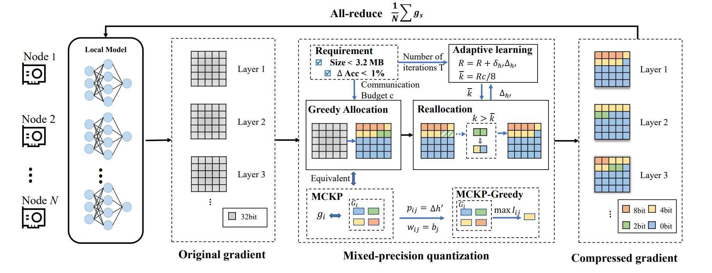
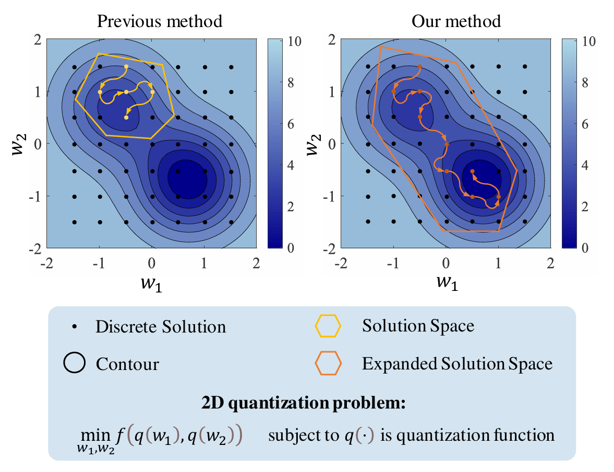
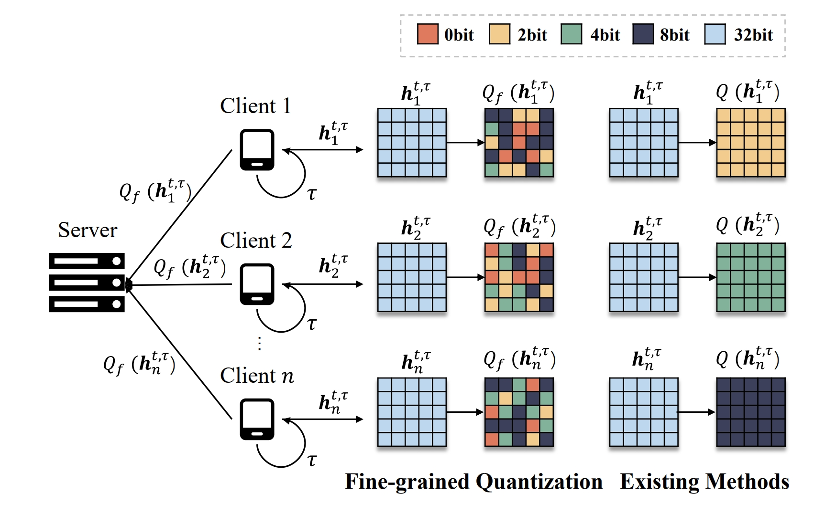
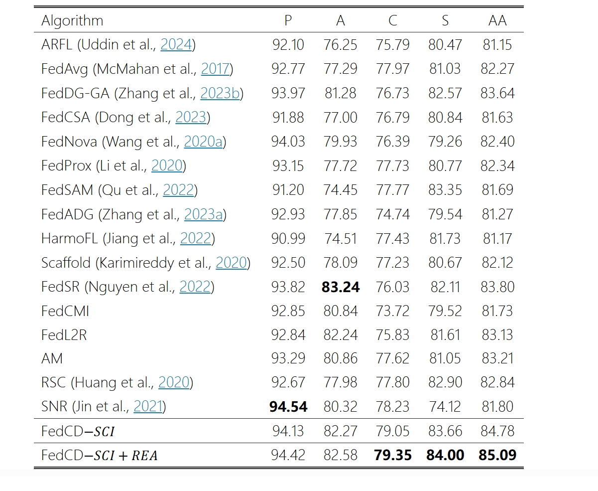
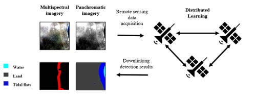

|
Haowei Li
I am currently pursuing a Ph.D. degree in Electrical Engineering at The Pennsylvania State University.
My current research focuses on the application of large language models (LLMs) in extended reality (XR) systems, including intelligent scene generation, interactive agents, and multimodal human–computer interaction.
I received both my bachelor’s and master’s degrees in Communications Engineering from Xidian University.
During my master’s studies, my research focused on efficient and scalable training and inference of large language models, with an emphasis on distributed learning systems.
Email /
Github /
Google Scholar
|
|
|
EDUCATION
The Pennsylvania State University, University Park, PA, USA
09/2025–Present
- Degree: Ph.D. in Electrical Engineering
- Advisor: Prof. Bin Li
- Research: Large Language Models for Extended Reality (XR)
Xidian University, Xi’an, China
09/2023–06/2025
- Degree: M.E. in Communications Engineering
- School: School of Telecommunications Engineering
- Advisor: Prof. Weiying Xie
- Research: Efficient distributed training and inference of large language models
- Outstanding Engineer Experimental Class
Xidian University, Xi’an, China
09/2019–06/2023
- Degree: B.E. in Communication Engineering
- School: School of Telecommunications Engineering
- Outstanding Engineer Experimental Class
|
|
RESEARCH INTERESTS
- Distributed Machine Learning
- Large Language Models (LLMs)
- Extended Reality (XR)
- Efficient Training and Inference
|
|

|
JointSQ: Joint Sparsification-Quantization for Distributed Learning
Author: Weiying Xie* (Advisor), Haowei Li*, Jitao Ma, Yunsong Li, Jie Lei, Donglai Liu and Leyuan Fang.
- We construct a Sparsification-Quantization joint learning framework to compress communication in distributed machine learning.
- Has been accepted in IEEE/CVF CONFERENCE ON COMPUTER VISION AND PATTERN RECOGNITION (CVPR-
2024).
-
Code
/
Paper
|
|
|

|
Allowing Oscillation Quantization: Overcoming Solution Space Limitations in Low Bit-Width Quantization
Author: Weiying Xie (Advisor), Zihan Meng, Jitao Ma, Wenjin Guo, Haowei Li, Haonan Qin, Leyuan Fang, Yunsong Li.
-
We propose AOQ, a novel quantization-aware training method that expands the quantized solution space via controlled oscillations.
-
Has been accepted in the IEEE/CVF International Conference on Computer Vision (ICCV 2025).
- Code Repository: https://github.com/muzenc/AOQ
|
|
|

|
FedFQ: Federated Learning with Fine-Grained Quantization
Author: Haowei Li, Weiying Xie (Advisor), Hangyu Ye, Jitao Ma, Shuran Ma and Yunsong Li.
- We devise personalized compression strategies at the parameter level for each client to address the Non-IID characteristics of Federated Learning.
- Under review by THE THIRTY-NINTH AAAI CONFERENCE ON ARTIFICIAL INTELLIGENCE (AAAI-2025).
- Paper link: https://arxiv.org/abs/2408.08977
|
|
|

|
Reducing Spurious Correlation for Federated Domain Generalization
Author: Shuran Ma, Weiying Xie (Advisor), Daixun Li, Haowei Li, Yunsong Li.
- We propose FedCD, a framework tackling cross-domain generalization in federated learning with IMG and REA methods. FedCD outperforms baselines, improving accuracy by 1.45% and mAP50 by 4.36%.
- Paper link: https://arxiv.org/abs/2407.19174
|
|

|
Coastline extraction technique based on SAM (Segment Anything Model)
- We are using SAM in the field of multimodal fusion, and we propose a cross-domain prompt learning model.
- We have designed a multi-satellite intelligent interpretation system for the distributed deployment of SAM.
- The relevant work has been implemented for coastline extraction in Uzbekistan. The average accuracy obtained from remote sensing data in Uzbekistan is 91.64%.
|
|
|
ChatMars: A Unified Multimodal Vision–Language Model for Planetary and Earth Studies
-
We introduce Mars-VL-227k, a unified multimodal image–text dataset designed for planetary exploration and Earth observation.
-
We develop Chat-Mars-LLAMA3, a multimodal vision–language model that integrates tasks from both planetary science and Earth-based studies.
-
I am responsible for the distributed training and training acceleration of the model, enabling scalable and efficient large-scale training.
|
|
AWARDS AND RECOGNITION
- IEEE student member.
- Milton and Albertha Langdon Memorial Graduate Fellowship(2025-2026).
- Graduate Outstanding Academic Scholarship, Xidian University (2024).
- Undergraduate School-Level Scholarship, Xidian University (2022).
- Third Prize in the 2nd "Fire Cup" Target Intelligent Recognition Competition (2023).
|
|
WORK EXPERIENCE
- Fibocom Wireless Inc, Xi’an, China03/2022-07/2022
- Department: Software Development (Intern)
- Position: Project Leader of the “Facial Recognition Attendance System”
- We are responsible for establishing an employee facial database and developing a facial recognition system on a demo board, based on FaceNet (an open-source project utilizing CNN). Additionally, we are
developing an APP to provide user APIs and handle the system's daily maintenance and updates.
|
|
MISC
- Here are the photos I took when I attended CVPR 2024:[here]
- This is the student club I joined, and it's about pop music:[here]
|
|
{kind=link}
{kind=link}
{kind=link}
{kind=link}
{kind=link}
{kind=link}
{kind=link}